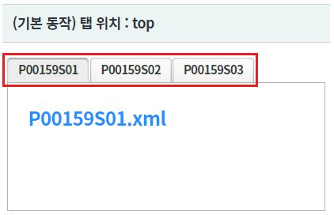
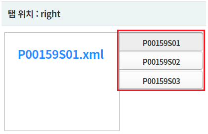
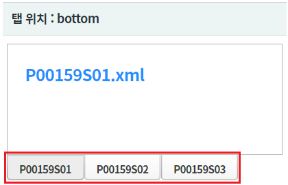
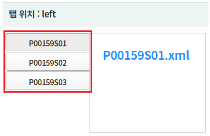
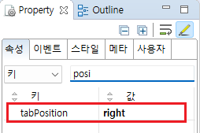
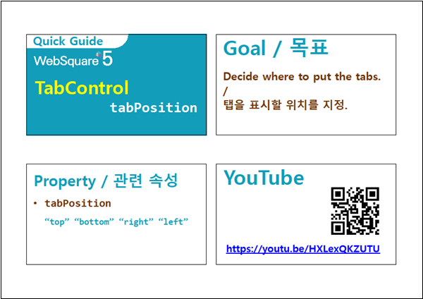

TabControl의 탭을 표시할 위치를 지정하는 속성 tabPosition 예제입니다. 속성 tabPosition에 지정할 수 있는 값은 "top", "left", "right", "bottom" 입니다. 속성 tabScroll이 "true"로 지정된 경우 "top", "bottom"만 지원되며, "left", "right"로 지정된 경우 "top"으로 동작합니다.
(기본 동작) 탭 위치 : top
탭 위치 : right
탭 위치 : bottom
탭 위치 : left
각 영역의 TabControl의 탭의 위치를 비교합니다.
영역 [(기본 동작) 탭 위치 : top]의 TabControl의 탭의 위치를 확인합니다.
탭이 상단(top)에 위치합니다.
[브라우저(Chrome) 실행 예시]

영역 [(탭 위치 : right]의 TabControl의 탭의 위치를 확인합니다.
탭이 우측(right)에 위치합니다.
[브라우저(Chrome) 실행 예시]

영역 [(탭 위치 : bottom]의 TabControl의 탭의 위치를 확인합니다.
탭이 하단(bottom)에 위치합니다.
[브라우저(Chrome) 실행 예시]

영역 [(탭 위치 : left]의 TabControl의 탭의 위치를 확인합니다.
탭이 좌측(left)에 위치합니다.
[브라우저(Chrome) 실행 예시]

지정할 수 있는 값은 "top", "left", "right", "bottom" 입니다.
속성 tabScroll이 "true"로 지정된 경우 "top", "bottom"만 지원되며, "left", "right"로 지정된 경우 "top"으로 동작합니다.
[필수] tabPosition="right" //탭이 오른쪽에 위치됩니다.
(지정값 설명)
"top" : 위에 위치.
"left" : 왼쪽에 위치.
"right" : 오른쪽에 위치.
"bottom" : 하단에 위치.
그림 1.웹스퀘어5 SP5 스튜디오의 Property View(속성창) 예시

[소스 코드 예시]
<!-- tabControl 소스 본문 예시 --> <w2:tabControl tabPosition="right" id="tac_exam2"> <!-- 중략 --> </w2:tabControl>
tabPosition
[웹스퀘어5 SP5 개발 가이드] TabControl
링크 : https://docs1.inswave.com/sp5_user_guide/2059d4ce88b2fc16#0eeccc9d7fde2d33
[웹스퀘어5 SP5 개발 가이드] TabControl 탭 위치 지정 (tabPosition)
링크 : https://docs1.inswave.com/sp5_user_guide/2059d4ce88b2fc16#3c03f7f6ae5b6a17
TabControl - 탭 위치 지정 (tabPosition)
링크 : https://youtu.be/HXLexQKZUTU
